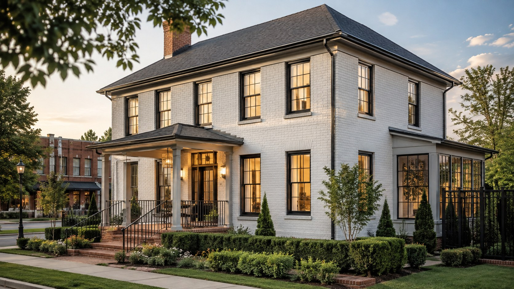

Window Replacement in Franklin, TN Homeowners Can Feel Good About
Blue Haven Windows helps Franklin homeowners replace old, drafty, or foggy windows with premium vinyl built for comfort, curb appeal, and long-term value—without a high-pressure sales process.
Full-Service Window Replacement in Franklin, TN You Can Trust
Blue Haven Windows helps Franklin homeowners replace drafty, noisy, foggy, or hard‑to‑open windows. With historic homes near downtown, established brick houses, and newer neighborhoods like Westhaven, Franklin has a wide range of styles and window needs. We help you choose replacements that improve comfort and curb appeal while fitting your home and budget.
If you’re searching for window replacement in Franklin, TN, you’ll get clear explanations, high‑quality vinyl windows, and a low‑pressure experience. We consider your home’s character, neighborhood expectations, and issues like traffic noise near Cool Springs and busier corridors so the finished project looks right and feels better to live in.

Window Replacement Beyond Franklin
Franklin is our home base. Homeowners in nearby communities can visit the dedicated local page for their city.
Benefits for Your Home
Practical improvements for comfort, curb appeal, efficiency, and confidence.
Replace drafty or damaged windows with modern vinyl replacement windows
Improve everyday comfort in hot, humid Middle Tennessee summers and cool winters
Refresh curb appeal with styles that fit your home architecture
Reduce maintenance with vinyl that resists fading and discoloration
Work with a local window company Franklin TN homeowners can call directly
Choose options for energy performance, style, and budget
Premium Wincore 7700 Window Options
Blue Haven Windows offers Wincore 7700 windows with performance and design options that can be matched to your goals. 7700 windows meet ENERGY STAR guidelines when ordered with Low-E/Argon-filled glass.
Double hung, slider, casement, picture, awning, bay, bow, garden, geometric, and patio door styles are available, along with grid, color, laminate, woodgrain, decorative glass, and hardware options.
Blue Haven Windows’ covered installation workmanship is protected by our Limited Lifetime Workmanship Warranty, subject to complete terms, limitations, and exclusions.
Download Wincore 7700 PDF- Wincore 7700 windows
- Low-E glass and Argon gas filled insulating glass
- Optional triple-pane high performance glass with Krypton gas option
- Super Spacer system with warm-edge spacer technology
- Multi-chamber vinyl frames with welded sash and frame corners
- Multiple weatherseals to reduce drafts
- Sloped sill design to reduce water pooling
- Low-maintenance vinyl that resists fading and discoloration
- Simonton 5500 Collection premium vinyl windows
- AAMA Gold Label Certified construction and performance
- Fusion-welded, one-piece frame with a robust vinyl sash
- 15-chamber sash and frame design for insulation and structural performance
- Region-specific glass packages available to meet ENERGY STAR requirements
- ProSolar Low-E glass with standard Argon gas and optional Krypton gas
- Triple-stepped, sloped Simonton Sill for efficient water drainage
- Lap-Lok meeting rail with triple-fin weatherstripping for air and water resistance
Premium Simonton 5500 Window Options
Blue Haven Windows offers Simonton 5500 Collection premium vinyl windows engineered for long-term comfort, durability, and weather resistance. The collection is AAMA Gold Label Certified and can be configured with region-specific glass packages that meet ENERGY STAR requirements.
Available styles include double hung, double slider, 3-lite/end vent slider, casement, colonial casement, awning, picture, specialty shapes, garden, bay, and bow windows. Color, woodgrain, hardware, grille, screen, spacer, and glass options let you tailor the window to your home.
Download Simonton 5500 PDFHow Much Does Window Replacement Cost In Franklin, TN?
Most Franklin window replacement projects are priced per window and depend on the window style, glass package, size, and installation details of your home. Because every home is different, the most accurate number comes from a free in-home consultation—but you should never have to guess at ballpark pricing before inviting a company into your home.
We put together an honest local pricing guide that walks through typical cost ranges, what drives price up or down, and how promotions like Buy 2 Windows, Get 2 Free affect your total.
Read The Franklin Window Replacement Cost GuideServing Franklin Neighborhoods & Williamson County
Blue Haven Windows is based in Franklin and works throughout Williamson County, including Downtown Franklin, Cool Springs, Fieldstone Farms, Westhaven, Berry Farms, and McKay's Mill. Franklin homes often deal with aging builder-grade windows, strong afternoon sun exposure, drafty rooms, and condensation between panes—exactly the problems replacement windows are built to solve.
We also serve nearby communities:
Researching before you buy? Start with our guides on signs you need new windows, how long replacement windows last, and vinyl vs wood windows.
Ready for honest window guidance?
Get A Free In-Home Consultation With Blue Haven Windows
Talk with Stephen and a local, family-owned team serving Franklin, Nashville, and Clarksville about energy-efficient replacement windows, lifetime warranty options, fair pricing, and the current Buy 2 Windows, Get 2 Free promotion.
Why Choose Blue Haven Windows
We combine premium window solutions with a purpose-driven approach rooted in Franklin, Tennessee and committed to impact beyond the jobsite.
Homeowner-First Guidance
Clear recommendations, no fake claims, and options based on what your home actually needs.
Professional Process
From measurements to installation, our team focuses on fit, cleanliness, communication, and lasting performance.
Purpose Beyond Windows
Blue Haven Windows preserves its ministry and impact mission while serving Middle Tennessee homeowners.
Frequently Asked Questions
Helpful answers before you request a quote.
How do I know it is time to replace my windows?
Common signs include drafts, foggy glass, difficult operation, rotting or damaged frames, water concerns, and rooms that never feel comfortable. We can inspect your openings and explain practical replacement options.
Do you replace all windows at once?
Many homeowners replace every window for a consistent look and performance, while others phase projects by room or priority. We can discuss both approaches during your quote.
What types of replacement windows are available?
Popular choices include double hung, slider, casement, picture, awning, bay, bow, garden, geometric, and patio door styles.
Are your windows energy efficient?
Wincore 7700 windows meet ENERGY STAR guidelines when ordered with Low-E/Argon-filled glass, and additional glass packages may be available for higher performance.
Can replacement windows help curb appeal?
Yes. New windows can update exterior lines, brighten rooms, and coordinate grids, colors, laminates, woodgrain finishes, and hardware with the rest of your home.
How much does window replacement cost in Franklin, TN?
Most Franklin projects are priced per window and depend on window style, glass package, size, and installation details. See our Franklin window replacement cost guide for typical ranges, then request a free in-home estimate and ask about the Buy 2 Windows, Get 2 Free promotion.
Talk With The Local Window Team Homeowners Recommend
Before you request your free estimate, see what real homeowners say about Stephen and Blue Haven Windows: honest guidance, great communication, fair pricing, and quality work.
"Great experience with Blue Haven Windows! Easy to work with, great communication, and the windows turned out awesome."
"You won't find anyone more hardworking or honest than the team at Blue Haven Windows. They offer excellent character, great quality, and very fair pricing."